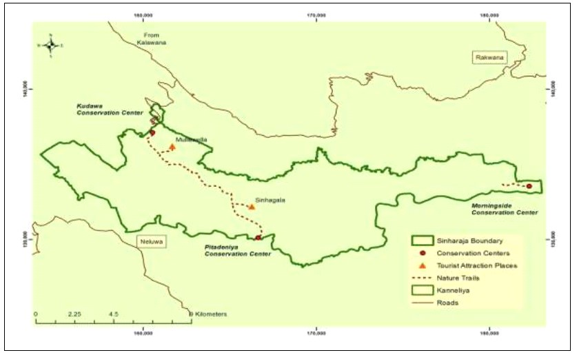
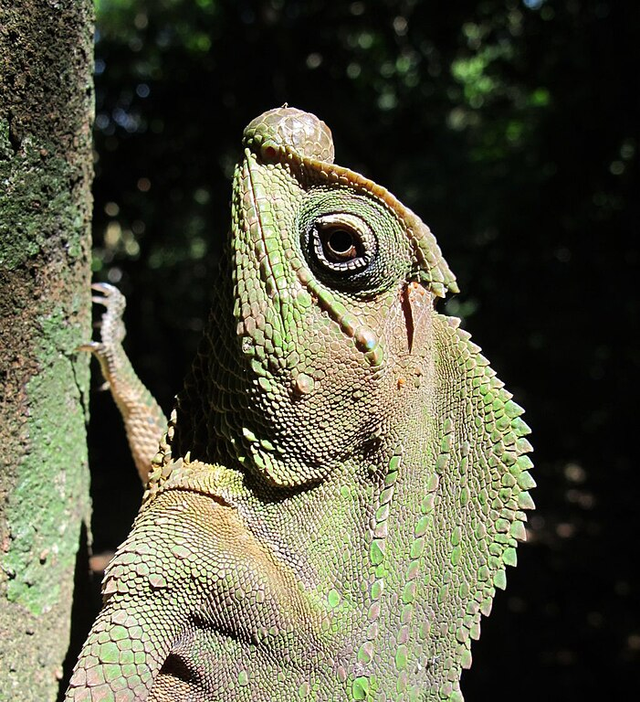
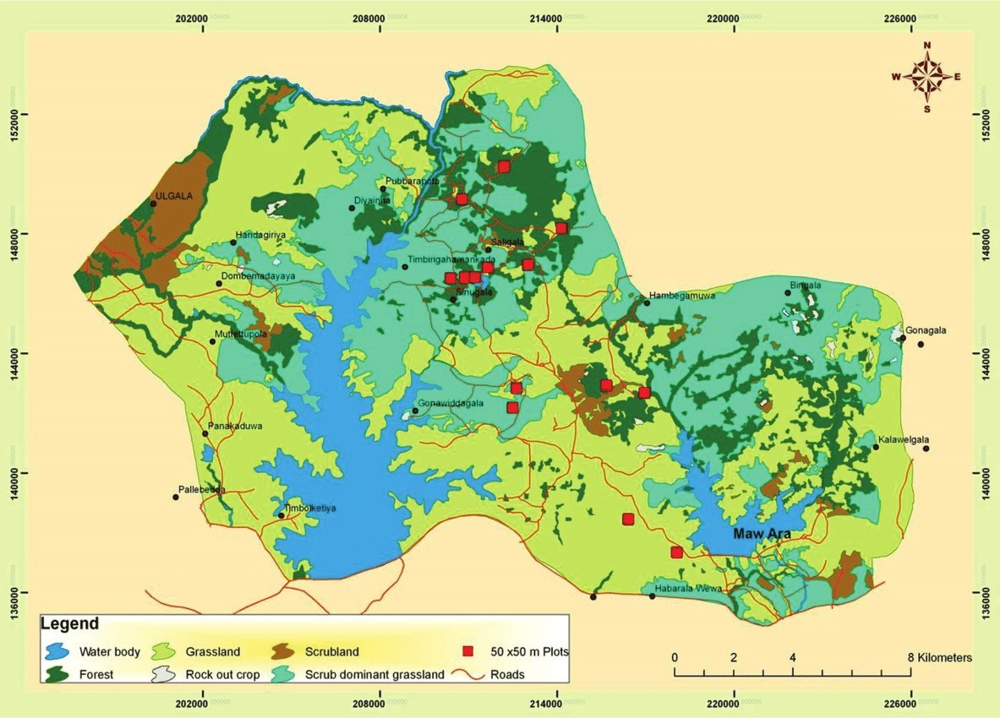
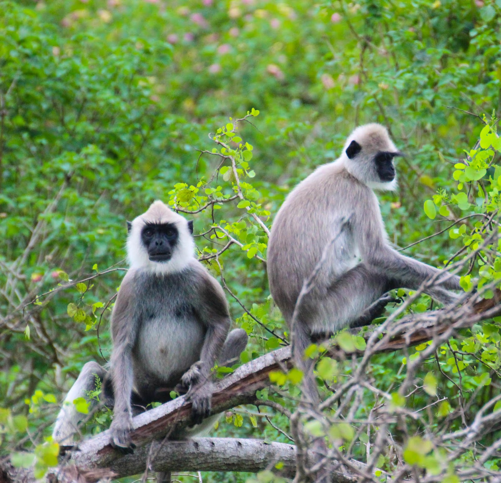
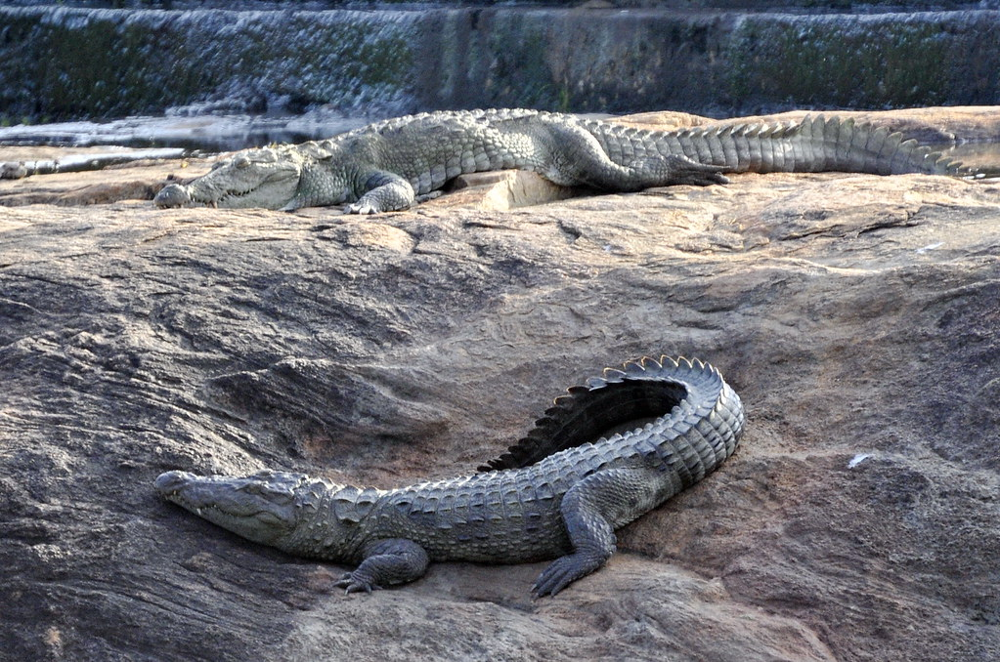
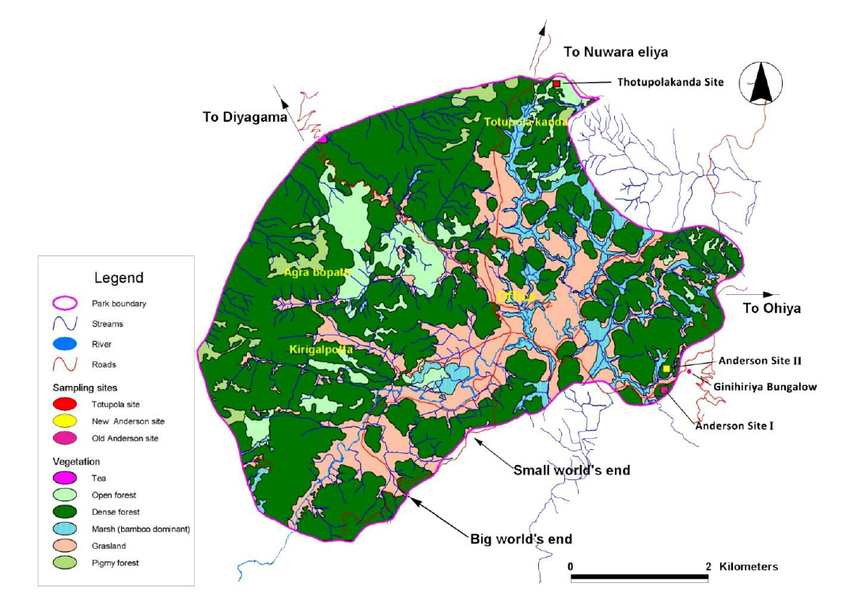
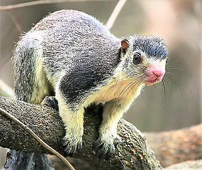
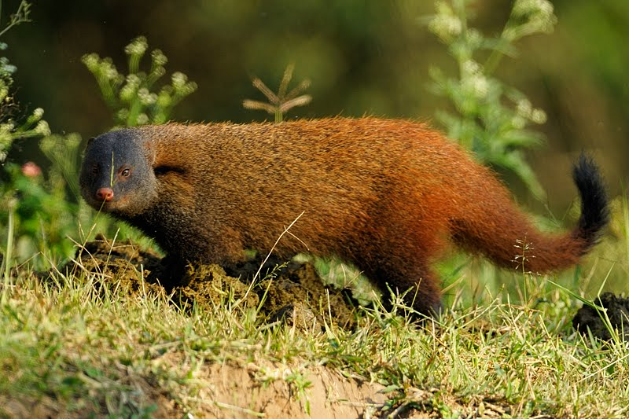

"Exploring Sri Lanka's Diverse Wildlife: A Journey Through Sinharaja, Udawalawe and Horton Plains"
Sri Lanka's diverse wildlife thrives in several notable locations, each offering a unique glimpse into the island's natural wonders. Sinharaja Forest Reserve, a UNESCO World Heritage Site, is a pristine rainforest known for its rich biodiversity, housing numerous endemic species of birds, reptiles, and amphibians. Udawalawe National Park, famous for its elephant orphanage, provides a chance to witness herds of Asian elephants against a scenic backdrop. Horton Plains National Park features stunning landscapes, including the dramatic World's End escarpment. Minneriya National Park is renowned for its large gatherings of Sri Lankan elephants during the dry season. These locations collectively contribute to Sri Lanka's status as a biodiversity hotspot, attracting nature enthusiasts and conservationists eager to explore the island's natural treasures.
Sinharaja Rainforest Reserve
Sinharaja Rainforest Reserve, a UNESCO World Heritage Site in Sri Lanka, stands as a pristine and biodiverse tropical rainforest. With its unique flora and fauna, including numerous endemic species, it is a haven for nature enthusiasts. The reserve's lush landscapes, diverse ecosystems, and vibrant birdlife make it a significant conservation area and a captivating destination for those seeking a glimpse into Sri Lanka's natural wonders.
| Animal Name | Description | |
|---|---|---|
| Purple-faced Leaf Monkey | The Sri Lankan Purple-faced Leaf Monkey, scientifically known as Trachypithecus vetulus, is a distinct primate species endemic to Sri Lanka, inhabiting the central and southwestern regions of the island. Recognizable by its dark purple-black face, the Purple-faced Leaf Monkey exhibits a unique appearance with brown or grey fur and a lengthy, slender tail, the latter of which can reach lengths of 60 to 75 centimeters. Adults typically measure between 40 and 58 centimeters in body length, with males generally larger than females. Thriving in montane forests and the wet zones of Sri Lanka, this species adapts to a variety of forest types, displaying agile climbing and leaping abilities in the arboreal environment. As primarily herbivorous creatures, their diet consists of leaves, fruits, flowers, and occasional seeds. |  |
| Sri Lankan Blue Magpie | The Sri Lankan Blue Magpie (Urocissa ornata) is a striking, endemic bird exclusive to Sri Lanka. With vibrant blue plumage, black and white markings, and a distinctive crest, it inhabits various forests, showcasing adaptability. Feeding on fruits, insects, and small vertebrates, it adds to the island's biodiversity with its melodic calls. While not globally threatened, habitat loss raises concerns. Conservation efforts aim to protect this unique and colorful species in Sri Lanka. |  |
| Hump-nosed Lizard | The Sri Lankan Hump-nosed Lizard (Lyriocephalus scutatus), a unique reptile native to Sri Lanka, is characterized by its distinctive appearance and behavior. Displaying a hump-like projection on its nose, it has a robust body and can grow to a moderate size. Its coloration is often a mix of earthy tones, providing effective camouflage in its natural habitat, which includes forested and rocky areas. This lizard is primarily arboreal, utilizing its strong limbs and prehensile tail for climbing. It is also known for its specialized feeding behavior, mainly preying on insects and other small invertebrates. |  |
Udawalawe National Park
Udawalawe National Park in Sri Lanka is a renowned wildlife sanctuary, celebrated for its population of Asian elephants and diverse ecosystems. Home to a range of wildlife, the park offers visitors a chance to witness herds of elephants against a picturesque backdrop. With its elephant orphanage and thriving biodiversity, Udawalawe provides a unique and rewarding safari experience, making it a key destination for nature enthusiasts and conservationists alike.
| Animal Name | Description | |
|---|---|---|
| Spotted Deer | The Sri Lankan spotted deer, scientifically known as Axis axis ceylonensis, is a distinct subspecies of the axis deer found in Sri Lanka. Recognizable by its striking coat pattern, this deer species features a reddish-brown coat adorned with white spots that become more prominent on the flanks and upper body. Adult males typically have impressive antlers, branching with multiple tines. These deer inhabit a variety of habitats, including grasslands, scrublands, and forested areas, displaying adaptability to different environments. As herbivores, their diet consists of grasses, leaves, and various vegetation. Sri Lankan spotted deer often form loose social groups, and their presence adds to the natural charm and biodiversity of Sri Lanka's diverse landscapes. | .jpg) |
| Grey Langur | The Grey Langur, scientifically known as Semnopithecus, is a widespread primate species found in various regions of Sri Lanka. Characterized by a predominantly grey fur coat, these langurs exhibit a sleek and slender physique with a long tail. Their faces are adorned with a black face mask, and they often have a prominent ridge of hair along their crown. Grey langurs are highly adaptable, residing in diverse habitats ranging from forests to urban areas. As herbivores, they consume a diet comprising leaves, fruits, and other vegetation. Living in social groups, these langurs display complex social structures with clear dominance hierarchies. Their presence is a common sight in Sri Lanka's natural landscapes, contributing to the country's rich biodiversity. |  |
| Mugger Crocodile | The Mugger Crocodile (Crocodylus palustris) is a freshwater crocodile species native to parts of South Asia, including Sri Lanka. Recognized for its broad snout and robust build, it is characterized by a dark olive-brown coloration with scattered darker spots and a relatively short and broad muzzle. Muggers primarily inhabit freshwater habitats such as rivers, lakes, and marshes. These crocodiles are skilled hunters, preying on fish, amphibians, and small mammals. They are known for their ability to adapt to various environments, including both flowing and stagnant waters. While they can be found in several locations across South Asia, their presence in Sri Lanka contributes to the country's diverse and unique wildlife. Conservation efforts are crucial to ensure the coexistence of mugger crocodiles and local communities. |  |
Horton Plains National Park
Horton Plains National Park, situated in the central highlands of Sri Lanka, is a biodiverse and picturesque area known for its unique landscapes and rich wildlife. Characterized by grassy plains, cloud forests, and scenic cliffs, the park encompasses World's End, a dramatic escarpment offering stunning views. Home to diverse fauna, including Sambar Deer and endemic bird species, the park is a popular destination for nature enthusiasts and hikers. With its cool climate and distinctive ecosystems, Horton Plains stands out as a UNESCO World Heritage Site, contributing to Sri Lanka's natural beauty and biodiversity.
| Animal Name | Interesting Facts | Image |
|---|---|---|
| Giant Squirrel | The Sri Lankan Giant Squirrel (Ratufa macroura), also known as the Ceylon Giant Squirrel, is a remarkable arboreal rodent native to Sri Lanka. Renowned for its large size and striking appearance, it has a vibrant and variable fur coloration, ranging from brown and orange to gray and black. Characterized by a distinctive tuft of hair at the tip of its ears, the giant squirrel's long bushy tail aids in balance and navigation through the treetops. These squirrels predominantly inhabit the upper canopy of both lowland and montane forests, displaying agile and acrobatic behavior as they leap between trees. Their diet primarily consists of fruits, nuts, seeds, and tender plant parts. Due to habitat loss and fragmentation, the Sri Lankan Giant Squirrel faces conservation challenges. Protection of its natural habitats and raising awareness about the importance of preserving this species contribute to ongoing conservation efforts in Sri Lanka. |  |
| Strip-necked Mongoose | The Sri Lankan Stripe-necked Mongoose (Herpestes vitticollis) is a small carnivorous mammal endemic to Sri Lanka. Recognized by its distinctive coloration, it has a dark brown to black body with a prominent white stripe running along its neck and underparts. This mongoose species is agile and primarily terrestrial, dwelling in various habitats such as forests, grasslands, and cultivated areas. Feeding on a diverse diet that includes insects, small mammals, reptiles, and fruits, the Stripe-necked Mongoose is an opportunistic predator. Its sharp sense of smell and keen hunting abilities make it an efficient forager. While it faces threats such as habitat loss and fragmentation, the mongoose's adaptability to various environments contributes to its survival. Conservation efforts are essential to ensure the protection of these unique mammals in the wild. |  |
| Slender Lorris | The Slender Loris (Loris tardigradus) is a small, nocturnal primate found in South Asia, including Sri Lanka. In Horton Plains National Park, this elusive and arboreal species can be encountered in the park's diverse habitats. The Slender Loris is characterized by its large, round eyes, which are adapted for night vision. It has a slender body, a long tail, and a woolly fur coat that aids in camouflage. As a nocturnal creature, the Slender Loris is adept at navigating through the trees in search of its prey, which mainly consists of insects, small reptiles, and bird eggs. Due to its nocturnal habits and cryptic nature, spotting a Slender Loris in the wild requires patience and careful observation. Conservation efforts are crucial to protect the habitats and ensure the survival of this unique primate species, including those found in Horton Plains National Park. |  |